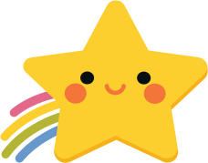
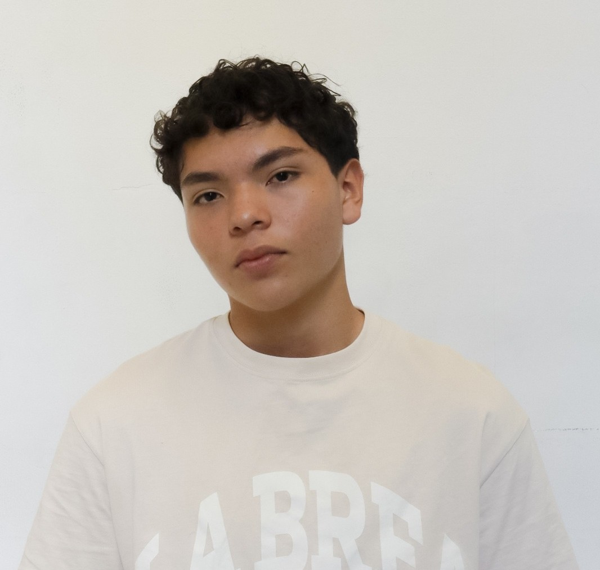
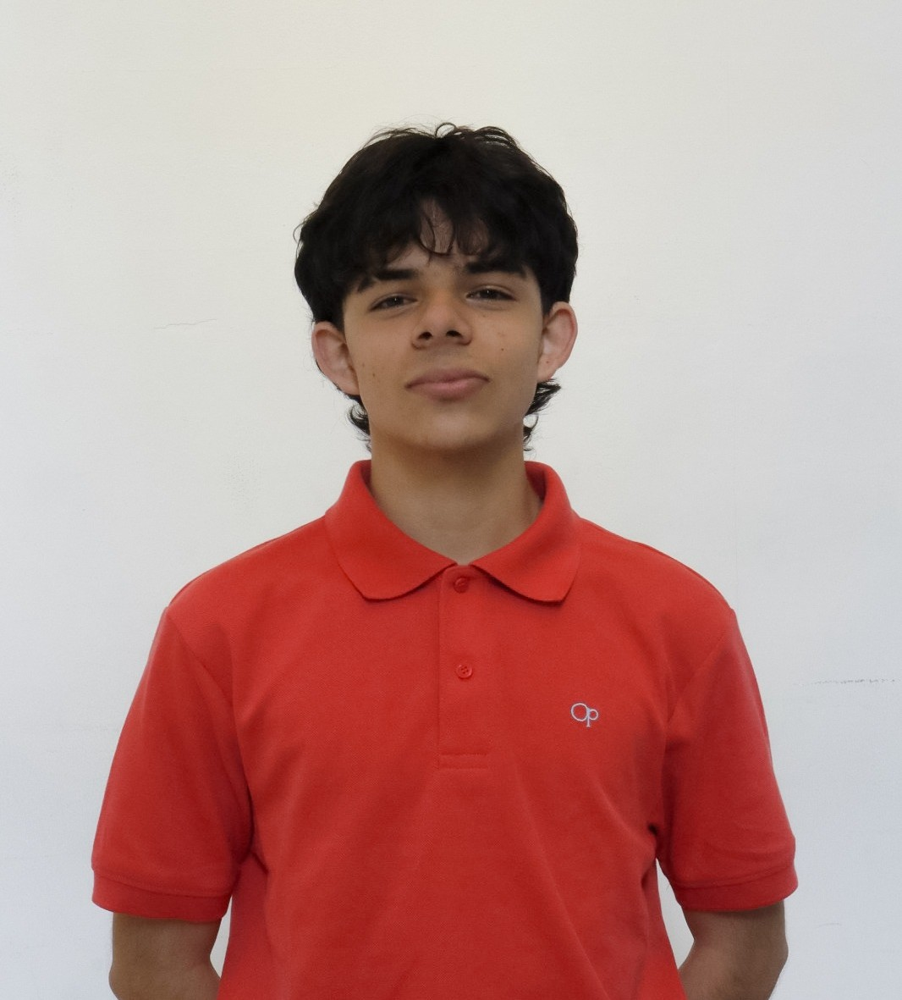

Aprendizaje
Actividades educativas que ayudan a practicar habilidades de manera cercana y dinámica.
Una propuesta educativa que busca acompañar el aprendizaje de estudiantes de primaria dentro y fuera del aula.

Practica. Aprende. Progresa.
La tecnología que acompaña tu forma de aprender.
¿Qué quieres practicar?
NubiLearn es una propuesta de aplicación educativa creada por estudiantes para explorar cómo la tecnología puede apoyar el proceso de aprendizaje de niños y niñas de primaria.
La idea nace de una pregunta sencilla: ¿cómo pueden las familias conocer mejor el avance de sus hijos y continuar apoyándolos cuando termina la jornada escolar?
Conoce a las personas detrás de la ideaActividades educativas que ayudan a practicar habilidades de manera cercana y dinámica.
Una forma de conectar el trabajo educativo con el apoyo que puede continuar en el hogar.
Seguimiento para comprender mejor el avance y reconocer las áreas que necesitan apoyo.
El aprendizaje no termina cuando se sale de la escuela. La comunicación y la práctica pueden hacer la diferencia.
Algunos estudiantes experimentan dificultades para concentrarse, leer, comprender o expresarse. Las familias también pueden necesitar más información para apoyar el proceso en casa.
NubiLearn propone una plataforma digital con actividades y seguimiento, pensada para utilizarse como apoyo educativo por estudiantes, familias y docentes.
La tecnología no sustituye a docentes ni familias: puede ser una herramienta para acompañar mejor el aprendizaje.
El objetivo es desarrollar una herramienta de apoyo que ayude a practicar, consultar avances y facilitar el acompañamiento del aprendizaje dentro y fuera de la escuela.
Explorar funcionalidadesFacilitar el acceso a actividades educativas interactivas.
Organizar información útil para observar el proceso de aprendizaje.
Favorecer el apoyo coordinado entre estudiantes, familias y docentes.
Considerar la seguridad, la protección de datos y los permisos de acceso.
Estas son las funciones principales descritas para la aplicación. Su disponibilidad puede variar según el estado de desarrollo.
Acceso a las funciones de la plataforma según el tipo de usuario y sus permisos.
Ejercicios educativos para reforzar la práctica y el aprendizaje.
Una función de orientación y apoyo educativo que busca complementar la experiencia.
Consultar datos almacenados y observar el avance del proceso de aprendizaje.
Paneles y consultas que permiten a las familias y especialistas apoyar el proceso según sus permisos.
Validación, protección de contraseñas y control de acceso como parte del desarrollo.
La presentación del proyecto identifica estas tecnologías y componentes para su construcción.
Para construir la interfaz con componentes y vistas interactivas.
Para apoyar el almacenamiento de datos y funciones de la plataforma.
Base de datos para organizar y consultar información.
Modelo de inteligencia artificial indicado para el asistente educativo.
Autenticación, validación de datos y control de acceso.
Para organizar el proyecto y mantener el código bajo control, la presentación destaca tres herramientas de trabajo.
Guardar, organizar y controlar las versiones del código.
Distribuir las tareas y dar seguimiento al trabajo del equipo.
Organizar el trabajo por etapas, objetivos y tareas.
QA Analyst
Project Manager

Backend Developer

Frontend Developer
NubiLearn · EXPOTEC 2026
La tecnología que acompaña tu forma de aprender.
Volver al inicio